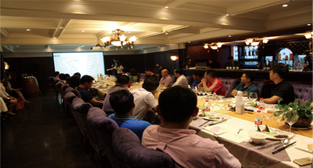

新闻中心
- ·公司简介
- ·企业文化
- ·招商加盟
- ·最新资讯
文章标题
作者：XXX 发布时间：2016-04-26
 对于WordPress网站，建议WordPress版本在3.0或以上，这样能完整的实现所有功能。当然，如
果版本在WordPress 3.0以下，多说也会尽力支持。多说也支持WordPress Mu，不同博客可以分别启
用。 建议Php程序5.0以上，推荐5.3.0以上，安装curl扩展。 我们鼓励大家抛弃老掉牙的IE6，所以多
说管理页面不支持IE6，强烈建议各位网站主大人使用IE 8,9，Chrome或Firefox浏览器。
网站的评论数相当多，同步到多说的过程中断了怎么办？
在客户服务中，我们发现部分香港和美国主机的用户，以及数据量比较大的用户，在同步中，出
现中断的情况。多说WordPress插件支持同步过程中的断点续传，如果您发现同步数据不动了，或者
中断报错，一般情况下再刷新一次页面，重新开始同步过程就好。我们保证数据不会出现重复和冗余。
如果多次出现这种情况，请和多说的管理员联系（QQ 2310391001，新浪微博：@多说网）。
对于已有大量文章和评论需要同步的网站，建议您在安装前与我们联系，以便我们为您提供更好
更及时地支持。
发文章时同时发布微博，这里面有什么玄机？
发文章时，如果文章写了摘要，那么发出来的微博是“文章摘要+文章链接”的格式。（如果您找
不到哪里写摘要，请在编辑文章页面上方找到“显示选项”，在其中勾选上“摘要”） 如果没有写摘
要，那么发出来的微博是“【文章题目】+文章正文+文章链接”的格式。其中文章题目长度为40个中
文字或80个英文字。
文章中的第一张图片也会发到微博里，优先选择文章的特色图像作为微博配图（如果您找不到哪里
设置特色图像，请在编辑文章页面上方找到“显示选项”，在其中勾选上“特色图像”）。只有上传到
WordPress中的图片会被发到微博。对于外链图片，目前只支持jpg格式的图片。
文章评论能保存到WordPress本地数据库吗？
多说WordPress插件支持评论实时保存到网站本地数据库，但这种保存只起到备份作用，在“多说
评论”里删除一条评论并不会在本地做同步删除。
当您在localhost测试时，由于我们无法链接到你的服务器，保存到本地不是实时的，而是半个小时
写回一次。
电话：024-87986333 024-87987555
公司地址：沈阳市沈河区北站路55号财富中心C座 全国免费热线：4001899533
QQ： 1931515555 手机：18842475555
工厂地址：沈阳市经济开发区新民屯镇